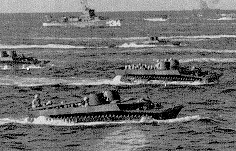
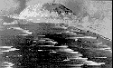
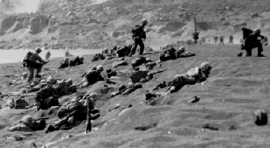
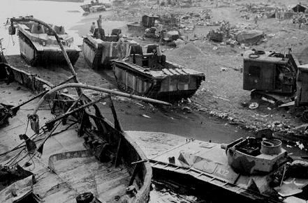

Roi-Namur, Kwajalein Atoll, Marshall Islands
2,439 miles west of Pearl Harbor
D Day February 1,1944
H Hour 11:00 AM
Secured February 2, 1944
Company C had no casualties on Roi-Namur
Saipan, Marianas Islands
3715 miles from Pearl Harbor and 1485 miles from Tokyo
D Day June 15, 1944
H Hour 8:40 AM
Secured July 9, 1944
29 Members of Company C were Killed in Action or Died of Wounds on Saipan
and 111 members were wounded.
Tinian, Marianas Islands
Three miles from Saipan
D Day July 24, 1944
H Hour 7:40 AM
Secured August 1, 1944
2 Members of Company C were Killed in Action or Died of Wounds on Tinian
and 6 members were wounded
Iwo Jima, Bonin Islands
3791 miles from Pearl Harbor
758 miles from Tokyo
727 miles from Saipan
D Day February 19, 1945
H Hour 9:00 AM
Secured March 16, 1945
49 Members of Company C were Killed in Action or Died of Wounds on Iwo Jima
and 130 members were wounded



Senior Commander determined that organized
resistance had ceased. Those who were still there after
an island was "secured" will testify it could still
be a very dangerous place.

were 80 killed and 247 wounded for a total of 327.
Our research has produced a list of 609 who served in Company C
for some period of time between January 1944 when we left the
USA until the war was over in September 1945. 114 of those members
joined after Iwo was secured leaving 495 that may have
been subject to becoming battlefield casualties. Leaving
Roi-Namur aside, where the Company suffered no casualties,
the company spent 60 days on unsecured battlefields, 25 days on Saipan,
9 days on Tinian and 26 days on Iwo Jima. The time on these
battlefields occurred between June 15, 1944 and March 16, 1945,
a period of nine months. Also at that time, I believe,
the authorized strength of a rifle company was about 210.
Any way you look at it, the casualty rate was very high.
Created by Rowland Lewis
Last Modified 12/27/2002